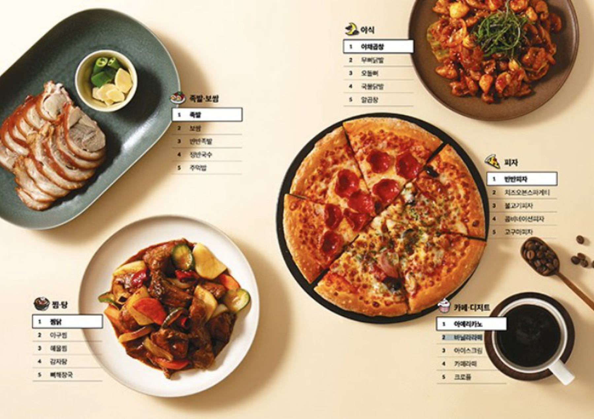

‘배민트렌드 2021’은 의도하지 않았지만 실제로 일어나는 주문들로부터 시작했습니다.
수많은 주문들과 그 선택의 이유를 각각 알아내는 것은 무척이나 재미있었습니다.
게다가 그 이유들은 배민을 이용하는 사장님들에게 가게운영의 힌트가 되었어요.
그래서 우리는 정보들을 가득 모아 배민트렌드를 만들기로 마음먹었습니다.
언젠가부터 배민 리뷰 구경을 즐긴다는 후기들이 많이 발견됐습니다. 배민 리뷰를 보는 게 취미인 사람들이 있었죠.
그 사람들은 리뷰를 보다가 주문하고 싶은 가게를 만나면 ‘찜’해두고, 이후에 주문하는 패턴을 보였습니다. (찜: 배민 앱 내의 즐겨찾기 기능으로, 가게 정보에서 찜 버튼을 누르면 "찜한가게"리스트에 저장됩니다)'찜'의 처음 기획 의도는 먼저 가게 음식을 먹어보고 그 가게를 다시 이용하기 쉽도록 저장하는 기능이었습니다. 그런데 음식을 먹어보기도 전에 미리 가게를 골라두는 ‘찜'이 존재하고 있었습니다. 전자의 찜은 기존고객이고, 후자의 찜은 잠재 고객이 되겠죠. 둘을 대하는 방법은 다를 수 밖에 없을 겁니다.
링크 확인
없는 것 : 배민에서 가장 많이 팔린 메뉴 있는 것 : 카테고리별 가장 많이 팔린 메뉴
오랫동안 사장님들을 위한 콘텐츠를 만들면서 느꼈던 것은, 모든 가게가 잘 되는 가게와 똑같은 방법을 쓸 수 없다는 것입니다. 어떤 메뉴가 유행한다고 해서, 모두가 그 메뉴를 만들 수 없으며, 효과 좋은 마케팅 방법이 있다고 해서, 모든 사장님이 그 방법을 따라 할 수 있는 여건이 되는 건 아니었습니다. 그래서 가장 많이 팔린 1위 메뉴는 배민트렌드 2021에 없습니다. 하지만 카테고리별 1위 메뉴는 있습니다. 그렇다면 적어도 피자 카테고리 1위 메뉴는 피자집 사장님에게, 한식 카테고리 1위 메뉴는 백반집 사장님에게 영감을 줄 수 있을테니까요.하지만 카테고리별 1위 메뉴는 있습니다. 그렇다면 적어도 피자 카테고리 1위 메뉴는 피자집 사장님에게, 한식 카테고리 1위 메뉴는 백반집 사장님에게 영감을 줄 수 있을테니까요.

없는 것 : 배민 총 주문수 있는 것 : 주문자 1명의 한 달 평균 주문수
1년간의 배민 총 주문 수도 없습니다. 한 달 주문수 6,400만(2020년 8월 기준)은 매우 큰 숫자지만 개별 사장님에게는 큰 의미가 없습니다. 대신 한 명의 주문자가 한 달에 5번 이상의 주문을 한다는 것은 정보가 될 수 있습니다. 우리 가게 단골의 기준을 세워볼 수 있을 테니까요.
있는 것 : 사장님이 반영할 수 있는 가게 운영 Tip
이렇게 트렌드의 모든 꼭지에 맞춰, 사장님이 실제 가게 운영에 반영할 수 있는 방법을 고민했습니다. 예를 들면, 이 글의 처음에 썼던 ‘찜'에 대한 이야기는 이렇게 가이드 되었습니다.
없는 것 : 몇몇 가설들
버려진 가설들도 많았습니다. 예상과 데이터는 전혀 달랐어요. 전체 주문 대비 야식 주문 비중이 그랬는데요. 배달 음식하면 야식! 이라는 고정 관념으로, ‘야식 시간의 주문 비중이 가장 높을거야.’로 시작된 가설이 있었어요. 하지만 실제 데이터는 전혀 달랐지요. 가설과 결과가 달랐던 데이터는 또 그 이유를 좇아 리포트에 담았습니다. ※리포트에서 내용을 확인해 보세요.
한편 아무리 고민해도 선택의 이유를 알기 어려웠던 데이터들도 있었어요. 예를 들면 ‘다이어트' 검색 수가 그랬는데요, 다이어트의 검색 수는 9월 초가 가장 많았어요. 옷이 얇아지기 시작하는 여름 초입이 아니라요. 이 부분은 자칫 잘못된 정보를 전달할 수 있을 것 같아 더 여러 시선으로 연구해 보려고 합니다. 많은 가설과 데이터가 버려지기는 했지만 그 과정까지 의미없는 건 아닐 거에요. 다른 업무에서 인사이트로 반영될 테니까요. (공개되지 못한 데이터로 만드는, 또 다른 프로젝트들이 있을 거란 말씀! 그 때 불쑥 찾아오겠습니다!)
없는 것 : 버려지는 택배 박스 있는 것 : 재활용이 가능한 타이벡
배민트렌드2021은 책자로 2만 부를 만들었습니다. 오픈 6시간 만에 신청이 모두 마감되었어요. 돈을 내서라도 받을 수 있는지 묻는 사장님들이 계시기도 했습니다. 그래서 전국의 더 많은 배민 사장님들이 받을 수 있도록 추가로 제작해서 무료로 배포했습니다. 버려지는 택배 박스 대신 재활용이 가능한 타이벡에 담아서 보냈습니다. 아! 택배 박스가 아닌 재활용이 가능한 타이벡에 책자를 담으며, 책자에 쓰인 종이들을 고민하지 않았던 것은 아닙니다. 하지만 말씀드린 것처럼 이 콘텐츠의 타깃은 전국 구석구석의 사장님들입니다. 책자는 온라인 정보에서 살짝 떨어져 있을지 모르는 더 많은 사장님이 받아보실 수 있도록 일부러 선택한 포맷이지요. 맞아요. 그래도 걱정되어요. 배민트렌드 2022에서는 이 문제를 현명하게 해결해 볼게요. 꼭이요!!